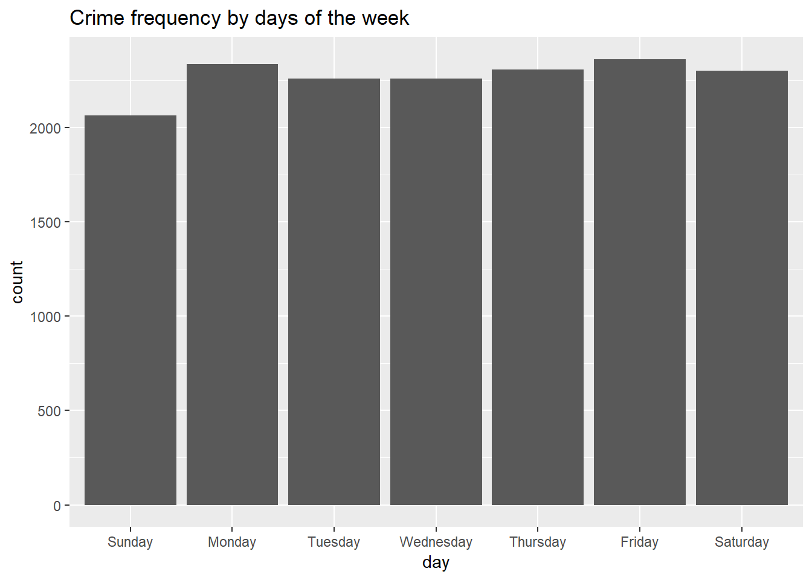
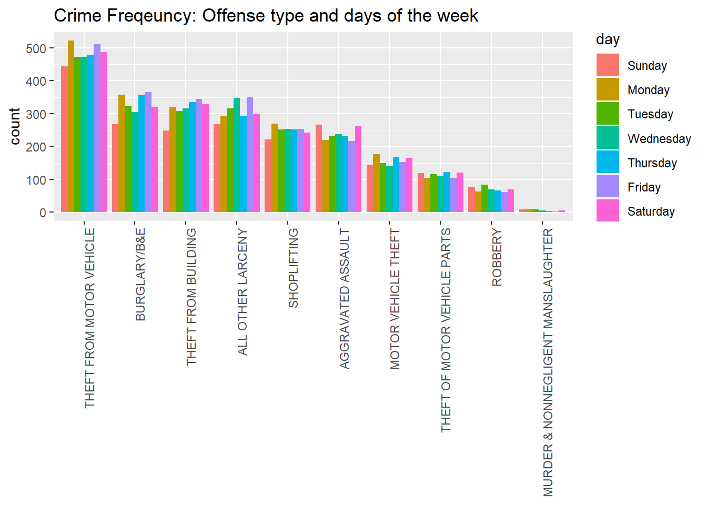

Venn and Euler Diagrams in R
A quick tutorial focusing on the different input formats and features of four Venn diagram packages.
Not interested in using r? Click here to find links to non-programming, web-based solutions.
Summary of packages in tutorial:
- Venn
- Best use: Fast venn diagrams
- Can make a venn diagram with up to 7 sets.
- VennDiagram
- Best use: Publication worthy Venn diagrams
- Makes venn diagrams with up to 4 sets or euler diagrams with up to 3 sets.
- High resolution, options for customization
- Eulerr
- Best use: Euler diagrams
- Great default settings for making beautiful Euler diagrams
- Watch out for missing relationships… Euler diagrams can be tricky sometimes.
- Limma
- Best use: Venn diagrams after microarray analysis
- Can make a venn diagram with up to 5 sets.
- Input is a count matrix rather than a list of IDs.
Create Sample Dataset
This sample dataset consists of three samples and one control. All have the same genes (IDs) but different p-values (pval).
We want to find out how many genes are significant in each sample and how many of those genes overlap with the other samples.
# Sample dataset ####
set.seed(23)
IDs <- paste("Gene", 1:100, sep = "_")
sample1 <- data.frame(IDs, pval = rnorm(length(IDs)))
sample2 <- data.frame(IDs, pval = rnorm(length(IDs)))
sample3 <- data.frame(IDs, pval = rnorm(length(IDs)))
control <- data.frame(IDs, pval = runif(length(IDs)), 0.01, 1)
# Get significant genes in each sample.
sig1 = sample1[sample1$pval < 0.05,]
sig2 = sample2[sample2$pval < 0.05,]
sig3 = sample3[sample3$pval < 0.05,]
sigcntl = control[control$pval < 0.05,]Venn
https://cran.r-project.org/web/packages/venn/venn.pdf
Venn can create a venn diagram with up to 7 sets and is quick and easy to use.
library(venn)
# Input is list of IDs
# Get all significant genes (p values < 0.05)
ID_list <- list(Sample1=sample1$IDs[sample1$pval < 0.05],
Sample2=sample2$IDs[sample2$pval < 0.05],
Sample3=sample3$IDs[sample3$pval < 0.05],
Control=control$IDs[control$pval < 0.05])
venn(ID_list,
cexil = 1.5, # Change intersection labels
cexsn = 1.25, # Change set name labels
zcolor = c("blue", "red", "yellow", "green"), opacity = 0.5)
VennDiagram
https://cran.r-project.org/web/packages/VennDiagram/VennDiagram.pdf
VennDiagram has many options for cutsomization and can be used to create high quality figures.
You can use it to make both Venn and Euler diagrams.
library(VennDiagram)
# Input is list of IDs
ID_list <- list(Sample1=sig1$IDs, Sample2=sig2$IDs, Sample3=sig3$IDs, Control=sigcntl$IDs)
myVenn <- venn.diagram(x=ID_list[1:4], filename = NULL,
fill = c("blue", "red", "yellow", "green"), alpha = 0.5, col="transparent",
cex = 1.25, fontface="bold", # Intersection label size and style
cat.fontface="bold", cat.cex = 1, # Category name size and style
cat.col = c("navy", "darkred", "goldenrod", "darkgreen"))
grid.newpage()
grid.draw(myVenn)myVenn <- venn.diagram(x=ID_list[1:3], filename = NULL, fill = c("blue", "red", "yellow"),
alpha = 0.5, col="transparent",
cex = 1.5, fontface="bold", # Intersection label size and style
cat.cex=1.5, cat.fontface="bold", # Category name size and style
cat.dist=c(-0.01,-0.01,-0.01), # Category name distance from edge of the circle
cat.pos = c(325,35,180), # Category name position in degrees
cat.col = c("navy", "darkred", "goldenrod"),
label.col = c("navy", "white", "darkred", "white", "black", "white", "goldenrod"))
grid.newpage()
grid.draw(myVenn)
myVenn <- venn.diagram(x=ID_list[c(1,3,4)], fill = c("blue", "red", "yellow"),
alpha = 0.5, fontface = "bold",
cat.fontface = "bold",
lty = "dashed", lwd=0.75,
filename = NULL)
grid.newpage()
grid.draw(myVenn)
myVenn <- venn.diagram(x=ID_list[c(1,4)], fill = c("blue", "yellow"),
alpha = 0.5, fontface = "bold",
cat.fontface = "bold",
cat.dist = c(-0.1,0.03), cat.pos = c(-30,25),
lty = "dashed", lwd=0.75,
filename = NULL)
grid.newpage()
grid.draw(myVenn)
Input data: Creating set relationship or count matrix
Both Limma and Eulerr do not accept a list of IDs as input. You can easily change a list of IDs into a count matrix. Here is one way to do that:
library(reshape2)
ID_list_m <- melt(ID_list[1:length(ID_list)])
ID_counts <- dcast(ID_list_m, value ~ L1, fun.aggregate = length)
head(ID_counts)## value Control Sample1 Sample2 Sample3
## 1 Gene_10 0 0 1 1
## 2 Gene_100 0 0 1 0
## 3 Gene_11 0 0 1 1
## 4 Gene_12 0 1 0 0
## 5 Gene_13 0 1 0 1
## 6 Gene_14 0 0 0 1Eulerr
Eulerr’s default settings for creating Euler diagrams are really beautiful. Input data is a count matrix.
https://cran.r-project.org/web/packages/eulerr/vignettes/introduction.pdf
library(eulerr)
# Input is a count matrix
fit <- euler(ID_counts[2:4])
plot(fit, quantities=TRUE)
However, Eulerr diagrams can be tricky sometimes …
Notice that Eulerr is missing the overlap between Sample 2 and the Control (Gene_39):
| value | Control | Sample1 | Sample2 | Sample3 |
|---|---|---|---|---|
| Gene_27 | 1 | 1 | 0 | 1 |
| Gene_30 | 1 | 0 | 0 | 1 |
| Gene_39 | 1 | 0 | 1 | 1 |
| Gene_65 | 1 | 0 | 0 | 0 |
Gene_39 is also missing below. Some relationships are difficult to show in euler diagrams.
fit <- euler(ID_counts[2:5])
plot(fit, quantities=TRUE)
Limma
https://bioconductor.org/packages/devel/bioc/manuals/limma/man/limma.pdf
Limma’s vennDiagram function can plot up to five sets and accepts a matrix of counts rather than a list of IDs. Click here to see sample data.
Count matrix:
## value Control Sample1 Sample2 Sample3
## 1 Gene_10 0 0 1 1
## 2 Gene_100 0 0 1 0
## 3 Gene_11 0 0 1 1
## 4 Gene_12 0 1 0 0
## 5 Gene_13 0 1 0 1
## 6 Gene_14 0 0 0 1Notice that it also shows the genes that were not signicant in any of the samples (bottom right corner).
#biocLite("limma")
library("limma")
vennDiagram(ID_counts[2:4], include = "both",
names = c("Sample 1", "Sample 2", "Sample 3"),
circle.col=c("blue", "red", "yellow"))
vennDiagram(ID_counts[2:5], include = "both",
names = c("Sample 1", "Sample 2", "Sample 3", "Control"),
circle.col=c("blue", "red", "yellow", "green"))Limma was written for processing microarray data and the venn diagram function works well following this pipeline:
fit <- eBayes(lmFit(Y,x))
results <- decideTests(fit)
a <- vennCounts(results)
vennDiagram(a)See https://rdrr.io/bioc/limma/man/ebayes.html for more information
Non programming solutions
If you just want to make a quick venn diagram, here are some online tools to help you:
- Venny
- http://www.forestrylab.org/tool/Venny/
- http://bioinfogp.cnb.csic.es/tools/venny/
- Up to 4 different sets
- Not proportional
- Can include percents or counts
- BioVenn
- http://www.biovenn.nl/
- Up to 3 different sets
- Proportional
- InteractiVenn
- http://www.interactivenn.net/
- Up to 6 different sets
- Not proportional
- Venn by Bioinformatics and Evolutionary Genomics
- http://bioinformatics.psb.ugent.be/webtools/Venn/
- Up to 3 different sets
Little Rock Crime Data
Plots
A quick look through crime in Little Rock, beginning with bar charts and ending with maps.
Load libraries and data
Load libraries
library(here) # find files
library(dplyr) # data munging
library(forcats) # frequency in ggplots
library(ggplot2) # plots
library(ggmap) # maps
library(sf) # spatial features
library(viridis) # add colors to plotLoad and Clean Data
I downloaded the crime data from this site: https://data.littlerock.gov/Safe-City/Little-Rock-mydata-Department-Statistics-2017-to-Y/bz82-34ep in 2018. It includes the crime data in Little Rock for all of 2017 and some of 2018.
# Load Data
mydata <- read.csv("./Little_Rock_Police_Department_Statistics_2017_to_Year_to_Date_2018.csv", na.strings="")
# Format dates
mydata$date <- as.Date(mydata$INCIDENT_DATE, format = "%m/%d/%Y")
mydata$datetime <- as.POSIXct(strptime(mydata$INCIDENT_DATE,format='%m/%d/%Y %I:%M:%S %p'))
# Create month and day variable
mydata$months <- factor(months(mydata$datetime),levels=c("January","February","March", "April","May",
"June", "July","August","September", "October",
"November","December"),ordered=TRUE)
mydata$day <- weekdays(mydata$datetime)
mydata$day <- factor(mydata$day, levels=c("Sunday", "Monday", "Tuesday", "Wednesday",
"Thursday", "Friday", "Saturday"))
# Change zip code from a numeric variable to a factor
mydata$ZIP <- as.factor(as.character(mydata$ZIP))I only want to look at crime within Little Rock in 2017. Here I remove 2018 data, duplicates, and a couple of data points that were from areas outside of Little Rock:
mydata <- mydata %>%
filter(is.na(ZIP)|ZIP != "72114", # remove North Little Rock zip
LATITUDE < 34.88169, # remove outlier location
date < as.Date("2018-01-01")) %>% # select only 2017
unique() A quick look at the data
ggplot(mydata, aes(x=fct_infreq(OFFENSE_DESCRIPTION))) +
geom_bar() + geom_text(stat='count', aes(label=..count..), vjust=-0.5)+
theme(axis.text.x = element_text(angle = 90, hjust = 1),
axis.title.x=element_blank()) + ggtitle("Crime frequency by offense") +
expand_limits(y=3750)Hmm… interesting. I want to get a better look at the data so I’m going to remove the bottom in frequent categories.
# Filter - remove least frequent ###
mydata <- mydata %>%
group_by(OFFENSE_DESCRIPTION) %>%
filter(n() >= 40)Days of the week
Does the day of the week make a difference?
mydata %>% filter(!is.na(day)) %>%
group_by(day) %>%
mutate(count = n()) %>%
ggplot(aes(x=day)) + ggtitle("Crime frequency by days of the week") +
geom_bar() It looks like there’s definitely less crime on Sunday. Let’s run a quick chi-square test…
tmp <- mydata %>% filter(!is.na(day)) %>%
group_by(day) %>%
transmute(count = n()) %>% unique()
chisq.test(tmp$count)##
## Chi-squared test for given probabilities
##
## data: tmp$count
## X-squared = 25.627, df = 6, p-value = 0.0002613Yes, the proportion of crimes committed is not the same for each day of the week.
Breaking it down by offense type:
mydata %>% filter(!is.na(day)) %>%
ggplot(aes(x=fct_infreq(OFFENSE_DESCRIPTION), fill=day)) +
geom_bar(position="dodge") + ggtitle("Crime Freqeuncy: Offense type and days of the week") +
theme(axis.text.x = element_text(angle = 90, hjust = 1),
axis.title.x=element_blank())
Crime by month
mydata %>% filter(!is.na(months))%>%
ggplot(aes(x=months, fill=OFFENSE_DESCRIPTION)) +
geom_bar() +
theme(axis.text.x = element_text(angle = 45, hjust = 1),
axis.title.x=element_blank()) + ggtitle("Crime frequency by month")It looks like there’s an overall increase in crime during the summer. However, it seems to be mainly driven by theft from motor vehicle. Let’s go deeper:
filter(mydata, !is.na(months)) %>%
ggplot(aes(x=fct_infreq(OFFENSE_DESCRIPTION), fill=months)) +
geom_bar(position="dodge") +
theme(axis.text.x = element_text(angle = 90, hjust = 1),
axis.title.x=element_blank()) + ggtitle("Crime frequency: Offense type in each month") Theft from motor vehicle definitely increases during the summer. It looks like “all other larcency” also increases.
Theft from motor vehicle definitely increases during the summer. It looks like “all other larcency” also increases.
Maps
This is my first time using r to make maps. I found these two sites especially useful and most of my code is based off of them. If you’re new to making maps, I highly recommend checking out these tutorials:
https://austinwehrwein.com/digital-humanities/creating-a-density-map-in-r-with-zipcodes/
http://eriqande.github.io/rep-res-web/lectures/making-maps-with-R.html
# Remove data missing location
mydata <- filter(mydata, !is.na(LOCATION_ADDRESS))Download zip codes to plot by zip
us_zip <- st_read(here("zip_codes", "cb_2017_us_zcta510_500k.shp"), quiet = TRUE)
little_rock <- filter(us_zip, ZCTA5CE10 %in% mydata$ZIP) # Filter US ZIPs to LR # Get crime frequency for each zip code
zips <- mydata %>% filter(!is.na(ZIP)) %>%
group_by(ZIP) %>%
mutate(count = n()) %>%
select(count, ZIP) %>% unique()
little_rock <- merge(little_rock, zips, by.x = "ZCTA5CE10", by.y="ZIP")Map with counties using geom_sf
lrbox <- make_bbox(lon = mydata$LONGITUDE, lat = mydata$LATITUDE, f = .5) # make a large box for zip codes
lrmap <- get_map(location = lrbox, maptype = "toner-lite", source = "stamen")
ggmap(lrmap) +
geom_sf(data = little_rock, aes(fill = count), inherit.aes = FALSE, lwd=0.4) +
scale_fill_viridis(option = "C",direction=-1, alpha=0.5) +
labs(title = "Little Rock Crime Density by Zip Code") +
ylim(34.55, 34.85) + xlim(92.55,92.2) lrbox <- make_bbox(lon = mydata$LONGITUDE, lat = mydata$LATITUDE, f = .05) # make a box around only crime data
lrmap <- get_map(location = lrbox, maptype = "toner-lite", source = "stamen")
ggmap(lrmap) +
geom_point(data = mydata, mapping = aes(x = LONGITUDE, y = LATITUDE), alpha=0.07) +
labs(title = "Little Rock Crime Data 2017",
fill = NULL) +
theme(axis.title = element_blank())The plot above is interesting because the crime dots highlight some of the roads that aren’t very visible on this stylized map. The string of dots running east-west in the south is Baseline. The road running at a diagonal is Rodney Parham. Both of these locations have a lot of shops and businesses. In the east by the “c” in Little Rock is the downtown area.
ggmap(lrmap) +
geom_density2d(data=mydata, mapping = aes(x = LONGITUDE, y = LATITUDE), size=0.3) +
stat_density2d(data=mydata,
aes(x=LONGITUDE, y = LATITUDE, fill = ..level.., alpha = ..level..),
size = 0.01,bins = 16, geom = "polygon") +
scale_fill_gradient(low = "black", high = "red") +
scale_alpha(range = c(0, 0.3), guide = FALSE) + labs(title="Little Rock Crime Data 2017")The high density area in the west is a major shopping area. I wondered how much of the crime in those areas are due to shoplifting so I made a shoplifting map below:
shoplifting <- filter(mydata, OFFENSE_DESCRIPTION=="SHOPLIFTING")
ggmap(lrmap) +
geom_density2d(data=shoplifting, mapping = aes(x = LONGITUDE, y = LATITUDE), size=0.3) +
stat_density2d(data=shoplifting,
aes(x=LONGITUDE, y = LATITUDE, fill = ..level.., alpha = ..level..),
size = 0.01,bins = 16, geom = "polygon") +
scale_fill_gradient(low = "black", high = "red") +
scale_alpha(range = c(0, 0.3), guide = FALSE) + labs(title="Shoplifting in Little Rock 2017")temp <- mydata %>%
group_by(OFFENSE_DESCRIPTION) %>%
filter(n() >= 1000, OFFENSE_DESCRIPTION != "SHOPLIFTING")
ggmap(lrmap) +
geom_density2d(data=temp, mapping = aes(x = LONGITUDE, y = LATITUDE), size=0.3) +
stat_density2d(data=temp,
aes(x=LONGITUDE, y = LATITUDE, fill = ..level.., alpha = ..level..),
size = 0.01,bins = 16, geom = "polygon") +
scale_fill_gradient(low = "black", high = "red") +
scale_alpha(range = c(0, 0.3), guide = FALSE) + labs(title="Crime Density by Offense") +
facet_wrap(~OFFENSE_DESCRIPTION)Which locations report crime the most?
location_freq <- sort(table(mydata$LOCATION_ADDRESS), decreasing = TRUE)[1:15]
most_common_locations <- mydata[which(mydata$LOCATION_ADDRESS %in% names(location_freq)),]
temp <- most_common_locations %>%
group_by(OFFENSE_DESCRIPTION) %>%
filter(n() >= 40)
ggplot(temp, aes(x=fct_infreq(LOCATION_ADDRESS), fill=OFFENSE_DESCRIPTION)) +
geom_bar() +
theme_bw() +
theme(axis.text.x = element_text(angle = 90, hjust = 1),
axis.title.x=element_blank()) + scale_fill_brewer(palette = "Set3")Some observations:
Shoplifting at shopping centers
As you can probably guess by the high frequency of calls that report shoplifting, the majority of these locations host shopping centers. And most of the shopping centers have multiple business located at the same address.
No shoplifting at the Airport!
Its a small airport and, except for Starbucks, all the stores are inside the secure area. But there’s a lot of motor vehicle theft.
No stars here
Sadly, 1516 cumberland hosts a nursing home with 1 star out of 7 google reviews and 5001 w 65th is home to an apartment building with 1.7 stars out of 15 google reviews.
Hospitals and the problem with using addresses
Two out of the three major hospitals are in this graph and both have a lot of theft from motor vehicles. I am a little surprised that the third hospital is not on here and I think their are two main reasons for this: 1)It is really a sprawling facility and most of the crime likely happens on the surrounding streets. 2) The main parking deck is under the facility and parking is tightly monitered. So even though parking there is a hastle, it does seem to reduce the amount of break-ins. And the free parking lots that the students and nurses park at are pretty far away from the main hospital and are located at a different address so any break-ins occuring there wouldn’t be included in the count as they are for the other hospitals.